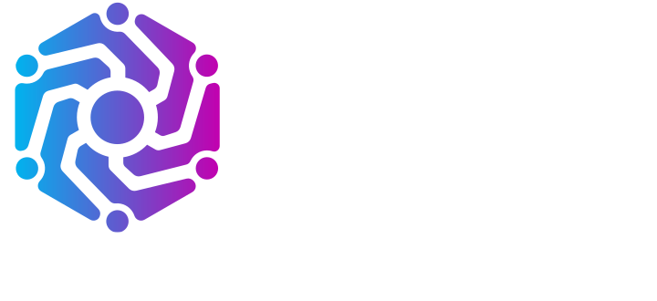
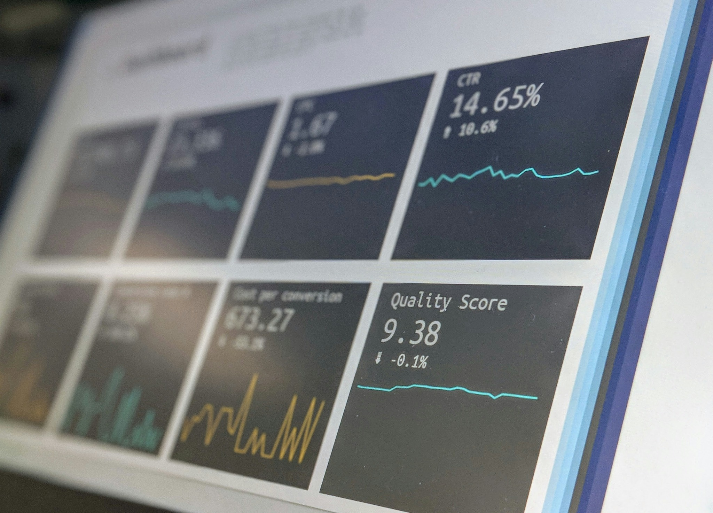
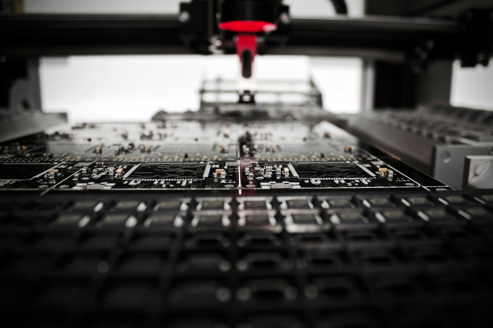

Plataformas
& Productos
Software a medida para procesos donde una solución genérica no alcanza.
APLICACIONES · SAAS · BACKOFFICEBUILD
SOFTWARE FACTORY BOUTIQUE · SANTIAGO, CHILE
Diseñamos, construimos y evolucionamos productos digitales junto a equipos que necesitan experiencia senior, cercanía y capacidad de ejecución.
SALUD · APPS MÓVILES · LOGÍSTICA · PACKAGING · PLATAFORMAS
12:42:08 CONTEXT understood ✓
12:42:09 SOLUTION designed ✓
12:42:10 PRODUCT in production ✓
01 / NUESTRA TESIS
Trabajamos con equipos compactos y experimentados. Nos involucramos en el problema, tomamos decisiones junto al cliente y construimos tecnología que puede crecer en el mundo real.
“No somos una fábrica de tickets.
Somos el equipo tecnológico detrás del desafío.”
02 / CAPACIDADES
Cuatro capacidades conectadas por una misma responsabilidad: que la tecnología funcione donde importa.
Software a medida para procesos donde una solución genérica no alcanza.
APLICACIONES · SAAS · BACKOFFICEBUILDConectamos sistemas para que la información fluya sin trabajo manual.
APIS · ERP · WEBHOOKS · LEGACYCONNECTReducimos errores y tiempos automatizando tareas y decisiones repetitivas.
OCR · AGENTES · WORKFLOWS · IAAUTOMATENos hacemos cargo del software después del lanzamiento.
CLOUD · DEVOPS · SEGURIDAD · SOPORTEOPERATE03 / EN CONTEXTO
La tecnología cambia según el problema. La capacidad de entenderlo y construir alrededor de él permanece.


04 / EXPERIENCIA
DISTINTAS INDUSTRIAS · UNA MISMA CAPACIDAD
Nuestra especialidad no es una industria. Es convertir problemas complejos en productos digitales sólidos, usables y preparados para evolucionar.
Plataformas y herramientas digitales que conectan información, profesionales y procesos sensibles.
PLATAFORMAS · DATOS · AUTOMATIZACIÓNExperiencias digitales pensadas para acompañar a usuarios dentro y fuera de la operación.
PRODUCTO · UX · INTEGRACIONESEcosistemas para coordinar información, planificación, ejecución y trazabilidad operacional.
OPTIMIZACIÓN · APIs · OPERACIÓNSoftware alrededor de procesos productivos, comerciales y documentales específicos.
WORKFLOWS · DOCUMENTOS · CONTROLNo llegamos con una solución predefinida. Llegamos con la experiencia para construir la correcta.
05 / LO QUE CONSTRUIMOS
Desde una primera versión funcional hasta sistemas que sostienen procesos completos.
01Experiencias móviles conectadas con datos, servicios y plataformas existentes.
02APIs, ERP, servicios externos y plataformas conectadas como un solo ecosistema.
03Documentos, workflows, datos e IA aplicados donde realmente generan valor.
0406 / CÓMO TRABAJAMOS
Un equipo senior y cercano, capaz de conversar con negocio, usuarios y tecnología sin perder información entre capas.
Proceso, usuarios, sistemas y problema real.
Arquitectura, experiencia, integraciones y alcance.
Desarrollo incremental, validado con la operación.
Despliegue, integración y acompañamiento.
Medición, corrección y evolución continua.
07 / TECNOLOGÍA
BACKENDLaravel · PHP · Python · Node
FRONTENDLivewire · React · Tailwind
DATA & CLOUDPostgreSQL · Redis · AWS · DigitalOcean
AUTOMATION & AIOpenAI · Anthropic · n8n · AWS Textract
¿TIENES UN DESAFÍO?
Una nueva plataforma, una aplicación móvil, una integración compleja o un producto que necesita evolucionar: podemos ser el equipo que lo lleve a producción.
Cuéntanos tu desafío ↗